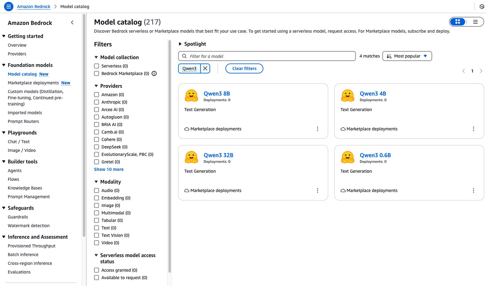
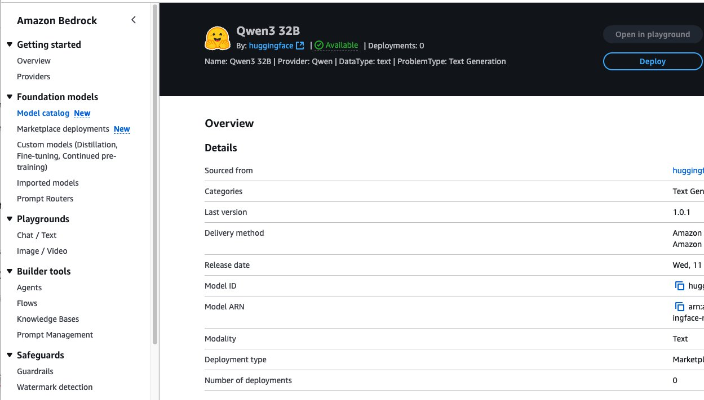
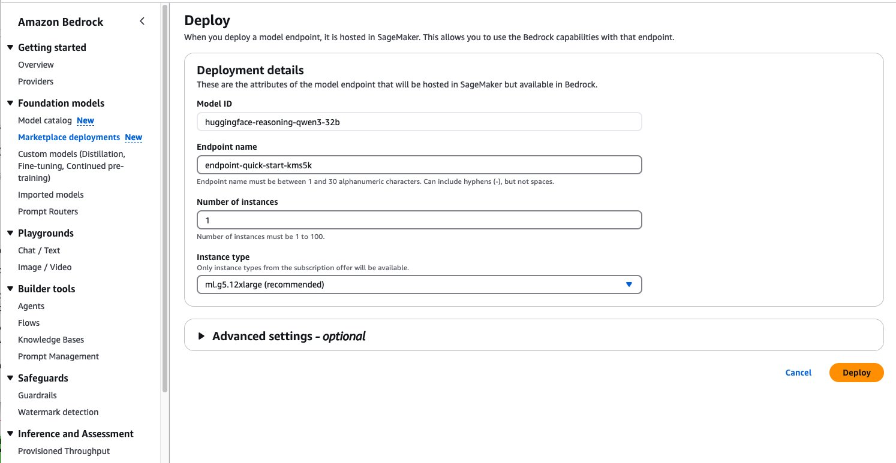
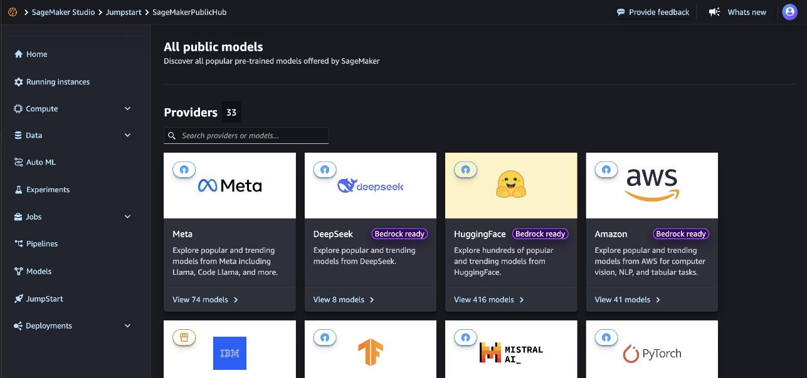
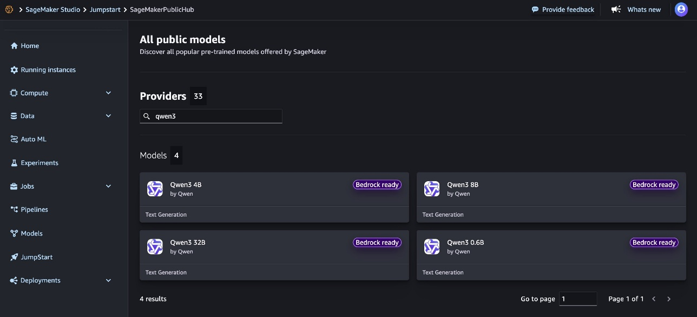
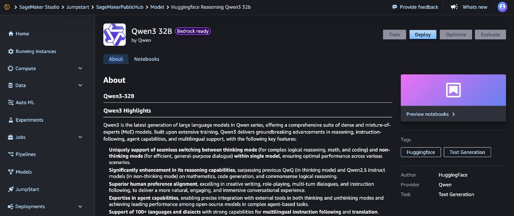
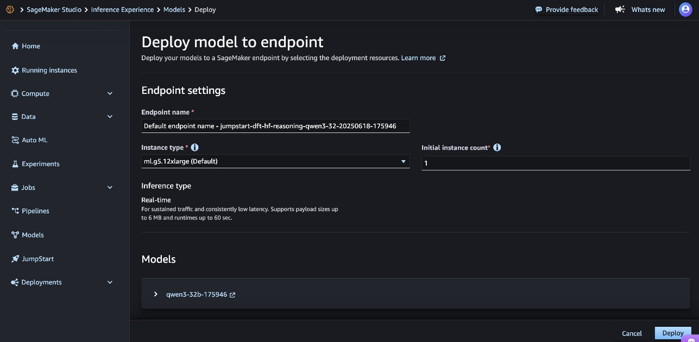

Hôm nay, chúng tôi vui mừng thông báo rằng Qwen3, thế hệ mô hình ngôn ngữ lớn (LLM) mới nhất trong dòng sản phẩm Qwen, đã có mặt trên Amazon Bedrock Marketplace và Amazon SageMaker JumpStart. Với lần ra mắt này, bạn có thể triển khai các mô hình Qwen3 — có sẵn ở các kích thước tham số 0,6B, 4B, 8B và 32B — để xây dựng, thử nghiệm và mở rộng quy mô các ứng dụng generative AI của bạn một cách có trách nhiệm trên AWS.
Trong bài viết này, chúng tôi sẽ hướng dẫn bạn cách bắt đầu sử dụng Qwen3 trên Amazon Bedrock Marketplace và SageMaker JumpStart. Bạn cũng có thể làm theo các bước tương tự để triển khai phiên bản rút gọn của các mô hình.
Qwen3 là thế hệ LLM mới nhất trong dòng Qwen, cung cấp một bộ mô hình toàn diện gồm các mô hình dày đặc và mô hình hỗn hợp chuyên gia (MoE). Qwen3 mang đến những tiến bộ đột phá về lập luận, tuân thủ hướng dẫn, khả năng của tác nhân và hỗ trợ đa ngôn ngữ, với các tính năng chính sau:
Để triển khai các mô hình Qwen3, hãy đảm bảo bạn có quyền truy cập vào các loại phiên bản được đề xuất dựa trên kích thước mô hình. Bạn có thể tìm thấy các đề xuất phiên bản này trên Amazon Bedrock Marketplace hoặc bảng điều khiển SageMaker JumpStart. Để xác minh bạn có đủ tài nguyên cần thiết, hãy hoàn thành các bước sau:
Nếu cần, hãy yêu cầu tăng hạn ngạch và liên hệ với nhóm tài khoản AWS của bạn để được hỗ trợ.
Amazon Bedrock Marketplace cho phép bạn truy cập hơn 100 mô hình nền tảng (FM) phổ biến, mới nổi và chuyên biệt thông qua Amazon Bedrock. Để truy cập Qwen3 trong Amazon Bedrock, hãy hoàn thành các bước sau:

Trang chi tiết mô hình cung cấp thông tin cần thiết về khả năng, cấu trúc giá và hướng dẫn triển khai của mô hình. Bạn có thể tìm thấy hướng dẫn sử dụng chi tiết, bao gồm các lệnh gọi API mẫu và đoạn mã để tích hợp.
Trang này cũng bao gồm các tùy chọn triển khai và thông tin cấp phép để giúp bạn bắt đầu sử dụng Qwen3-32B trong các ứng dụng của mình.

Bạn sẽ được nhắc cấu hình chi tiết triển khai cho Qwen3-32B. ID mô hình sẽ được điền sẵn. 2. Đối với Endpoint name, hãy nhập endpoint name (từ 1–50 ký tự chữ và số). 3. Đối với Number of instances, hãy nhập number of instances (từ 1–100). 4. Đối với Instance type, hãy chọn instance type của bạn. Để có hiệu suất tối ưu với Qwen3-32B, nên sử dụng loại phiên bản dựa trên GPU như ml.g5-12xlarge. 5. Để triển khai mô hình, hãy chọn Deploy.

Khi quá trình triển khai hoàn tất, bạn có thể kiểm tra khả năng của Qwen3-32B trực tiếp trên Amazon Bedrock playground. 6. Chọn Open in playground để truy cập vào giao diện tương tác, nơi bạn có thể thử nghiệm các lời nhắc khác nhau và điều chỉnh các thông số mô hình như nhiệt độ và chiều dài tối đa.
Đây là một cách tuyệt vời để khám phá khả năng lập luận và tạo văn bản của mô hình trước khi tích hợp nó vào ứng dụng của bạn. Playground cung cấp phản hồi tức thì, giúp bạn hiểu cách mô hình phản hồi với các đầu vào khác nhau và cho phép bạn tinh chỉnh lời nhắc để đạt được kết quả tối ưu. Bạn có thể nhanh chóng kiểm tra mô hình trong playground thông qua giao diện người dùng (UI). Tuy nhiên, để gọi mô hình đã triển khai theo chương trình với bất kỳ Amazon Bedrock API nào, bạn phải có endpoint Amazon Resource Name (ARN).
Đoạn mã sau đây cho thấy cách bật và tắt suy luận với các mô hình Qwen3 bằng Converse API, tùy thuộc vào trường hợp sử dụng của bạn. Theo mặc định, suy luận được để ở chế độ bật cho các mô hình Qwen3, nhưng bạn có thể đơn giản hóa các tương tác bằng cách sử dụng lệnh /no_think trong dấu nhắc. Khi bạn thêm lệnh này vào cuối truy vấn, suy luận sẽ bị tắt và các mô hình sẽ chỉ cung cấp câu trả lời trực tiếp. Điều này đặc biệt hữu ích khi bạn cần thông tin nhanh mà không cần giải thích, đã quen thuộc với chủ đề hoặc muốn duy trì luồng hội thoại nhanh hơn. Tại thời điểm viết bài, Converse API không hỗ trợ sử dụng công cụ cho các mô hình Qwen3. Tham khảo ví dụ về Invoke_Model API ở phần sau của bài viết này để tìm hiểu cách sử dụng suy luận và công cụ trong cùng một lần hoàn thành.
import boto3
from botocore.exceptions import ClientError
# Create a Bedrock Runtime client in the AWS Region you want to use.
client = boto3.client("bedrock-runtime", region_name="us-west-2")
# Configuration
model_id = "" # Replace with Bedrock Marketplace endpoint arn
# Start a conversation with the user message.
user_message = "hello, what is 1+1 /no_think" #remove /no_think to leave default reasoning on
conversation = [
{
"role": "user",
"content": [{"text": user_message}],
}
]
try:
# Send the message to the model, using a basic inference configuration.
response = client.converse(
modelId=model_id,
messages=conversation,
inferenceConfig={"maxTokens": 512, "temperature": 0.5, "topP": 0.9},
)
# Extract and print the response text.
#response_text = response["output"]["message"]["content"][0]["text"]
#reasoning_content = response ["output"]["message"]["reasoning_content"][0]["text"]
#print(response_text, reasoning_content)
print(response)
except (ClientError, Exception) as e:
print(f"ERROR: Can't invoke '{model_id}'. Reason: {e}")
exit(1)
Sau đây là phản hồi sử dụng Converse API, không có suy nghĩ mặc định:
{'ResponseMetadata': {'RequestId': 'f7f3953a-5747-4866-9075-fd4bd1cf49c4', 'HTTPStatusCode': 200, 'HTTPHeaders': {'date': 'Tue, 17 Jun 2025 18:34:47 GMT', 'content-type': 'application/json', 'content-length': '282', 'connection': 'keep-alive', 'x-amzn-requestid': 'f7f3953a-5747-4866-9075-fd4bd1cf49c4'}, 'RetryAttempts': 0}, 'output': {'message': {'role': 'assistant', 'content': [{'text': '\n\nHello! The result of 1 + 1 is **2**. 😊'}, {'reasoningContent': {'reasoningText': {'text': '\n\n'}}}]}}, 'stopReason': 'end_turn', 'usage': {'inputTokens': 20, 'outputTokens': 22, 'totalTokens': 42}, 'metrics': {'latencyMs': 1125}}
Sau đây là một ví dụ với suy nghĩ mặc định; các mã thông báo think được tự động phân tích thành trường reasoningContent cho Converse API:
{'ResponseMetadata': {'RequestId': 'b6d2ebbe-89da-4edc-9a3a-7cb3e7ecf066', 'HTTPStatusCode': 200, 'HTTPHeaders': {'date': 'Tue, 17 Jun 2025 18:32:28 GMT', 'content-type': 'application/json', 'content-length': '1019', 'connection': 'keep-alive', 'x-amzn-requestid': 'b6d2ebbe-89da-4edc-9a3a-7cb3e7ecf066'}, 'RetryAttempts': 0}, 'output': {'message': {'role': 'assistant', 'content': [{'text': '\n\nHello! The sum of 1 + 1 is **2**. Let me know if you have any other questions or need further clarification! 😊'}, {'reasoningContent': {'reasoningText': {'text': '\nOkay, the user asked "hello, what is 1+1". Let me start by acknowledging their greeting. They might just be testing the water or actually need help with a basic math problem. Since it\'s 1+1, it\'s a very simple question, but I should make sure to answer clearly. Maybe they\'re a child learning math for the first time, or someone who\'s not confident in their math skills. I should provide the answer in a friendly and encouraging way. Let me confirm that 1+1 equals 2, and maybe add a brief explanation to reinforce their understanding. I can also offer further assistance in case they have more questions. Keeping it conversational and approachable is key here.\n'}}}]}}, 'stopReason': 'end_turn', 'usage': {'inputTokens': 16, 'outputTokens': 182, 'totalTokens': 198}, 'metrics': {'latencyMs': 7805}}
Với Qwen3, bạn có thể truyền phát một dấu vết rõ ràng và lệnh gọi công cụ JSON chính xác trong cùng một lần hoàn thành. Cho đến nay, các mô hình suy luận đã buộc phải lựa chọn hiển thị chuỗi suy nghĩ hoặc gọi công cụ một cách xác định. Đoạn mã sau minh họa một ví dụ:
messages = json.dumps( {
"messages": [
{
"role": "user",
"content": "Hi! How are you doing today?"
},
{
"role": "assistant",
"content": "I'm doing well! How can I help you?"
},
{
"role": "user",
"content": "Can you tell me what the temperate will be in Dallas, in fahrenheit?"
}
],
"tools": [{
"type": "function",
"function": {
"name": "get_current_weather",
"description": "Get the current weather in a given location",
"parameters": {
"type": "object",
"properties": {
"city": {
"type":
"string",
"description":
"The city to find the weather for, e.g. 'San Francisco'"
},
"state": {
"type":
"string",
"description":
"the two-letter abbreviation for the state that the city is in, e.g. 'CA' which would mean 'California'"
},
"unit": {
"type": "string",
"description":
"The unit to fetch the temperature in",
"enum": ["celsius", "fahrenheit"]
}
},
"required": ["city", "state", "unit"]
}
}
}],
"tool_choice": "auto"
})
response = client.invoke_model(
modelId=model_id,
body=body
)
print(response)
model_output = json.loads(response['body'].read())
print(json.dumps(model_output, indent=2))
Response:
{'ResponseMetadata': {'RequestId': '5da8365d-f4bf-411d-a783-d85eb3966542', 'HTTPStatusCode': 200, 'HTTPHeaders': {'date': 'Tue, 17 Jun 2025 18:57:38 GMT', 'content-type': 'application/json', 'content-length': '1148', 'connection': 'keep-alive', 'x-amzn-requestid': '5da8365d-f4bf-411d-a783-d85eb3966542', 'x-amzn-bedrock-invocation-latency': '6396', 'x-amzn-bedrock-output-token-count': '148', 'x-amzn-bedrock-input-token-count': '198'}, 'RetryAttempts': 0}, 'contentType': 'application/json', 'body': <botocore.response.StreamingBody object at 0x7f7d4a598dc0>}
{
"id": "chatcmpl-bc60b482436542978d233b13dc347634",
"object": "chat.completion",
"created": 1750186651,
"model": "lmi",
"choices": [
{
"index": 0,
"message": {
"role": "assistant",
"reasoning_content": "\nOkay, the user is asking about the weather in San Francisco. Let me check the tools available. There's a get_weather function that requires location and unit. The user didn't specify the unit, so I should ask them if they want Celsius or Fahrenheit. Alternatively, maybe I can assume a default, but since the function requires it, I need to include it. I'll have to prompt the user for the unit they prefer.\n",
"content": "\n\nThe user hasn't specified whether they want the temperature in Celsius or Fahrenheit. I need to ask them to clarify which unit they prefer.\n\n",
"tool_calls": [
{
"id": "chatcmpl-tool-fb2f93f691ed4d8ba94cadc52b57414e",
"type": "function",
"function": {
"name": "get_weather",
"arguments": "{\"location\": \"San Francisco, CA\", \"unit\": \"celsius\"}"
}
}
]
},
"logprobs": null,
"finish_reason": "tool_calls",
"stop_reason": null
}
],
"usage": {
"prompt_tokens": 198,
"total_tokens": 346,
"completion_tokens": 148,
"prompt_tokens_details": null
},
"prompt_logprobs": null
}
SageMaker JumpStart là một trung tâm học máy (ML) với các FM, thuật toán tích hợp và các giải pháp ML dựng sẵn mà bạn có thể triển khai chỉ với vài cú nhấp chuột. Với SageMaker JumpStart, bạn có thể tùy chỉnh các mô hình được đào tạo sẵn theo trường hợp sử dụng, với dữ liệu của mình và triển khai chúng vào môi trường sản xuất bằng giao diện người dùng (UI) hoặc SDK. Việc triển khai mô hình Qwen3-32B thông qua SageMaker JumpStart mang đến hai phương pháp thuận tiện: sử dụng giao diện người dùng SageMaker JumpStart trực quan hoặc triển khai theo chương trình thông qua SageMaker Python SDK. Hãy cùng khám phá cả hai phương pháp để giúp bạn lựa chọn phương pháp phù hợp nhất với nhu cầu của mình.
Thực hiện các bước sau để triển khai Qwen3-32B bằng SageMaker JumpStart:
Trình duyệt mô hình hiển thị các mô hình có sẵn, kèm theo các chi tiết như tên nhà cung cấp và khả năng của mô hình.

Mỗi thẻ mô hình hiển thị thông tin chính, bao gồm:

Trang chi tiết mô hình bao gồm các thông tin sau:
Tab About bao gồm các thông tin chi tiết quan trọng, chẳng hạn như:

Trước khi triển khai mô hình, bạn nên xem lại thông tin chi tiết về mô hình và các điều khoản cấp phép để xác nhận tính tương thích với trường hợp sử dụng của mình.
Việc lựa chọn loại và số lượng phiên bản phù hợp là rất quan trọng để tối ưu hóa chi phí và hiệu suất. Hãy theo dõi quá trình triển khai của bạn để điều chỉnh các cài đặt này khi cần thiết. Trong mục Inference type, Real-time inference được chọn theo mặc định. Tùy chọn này được tối ưu hóa cho lưu lượng truy cập liên tục và độ trễ thấp. 10. Kiểm tra lại tất cả các cấu hình để đảm bảo độ chính xác. Đối với mô hình này, chúng tôi đặc biệt khuyên bạn nên tuân thủ các cài đặt mặc định của SageMaker JumpStart và đảm bảo tính năng cô lập mạng vẫn được duy trì. 11. Chọn Deploy để triển khai mô hình.

Quá trình triển khai có thể mất vài phút để hoàn tất.
Khi quá trình triển khai hoàn tất, trạng thái điểm cuối của bạn sẽ chuyển sang InService. Lúc này, mô hình đã sẵn sàng để chấp nhận các yêu cầu suy luận thông qua điểm cuối. Bạn có thể theo dõi tiến trình triển khai trên trang Endpoints của bảng điều khiển SageMaker, trang này sẽ hiển thị các số liệu và thông tin trạng thái liên quan. Khi quá trình triển khai hoàn tất, bạn có thể gọi mô hình bằng SageMaker runtime client và tích hợp nó với các ứng dụng của mình.
Để bắt đầu sử dụng Qwen3-32B bằng SageMaker Python SDK, bạn phải cài đặt SageMaker Python SDK và đảm bảo bạn đã thiết lập môi trường và quyền AWS cần thiết. Sau đây là ví dụ mã từng bước minh họa cách triển khai và sử dụng Qwen3-32B cho suy luận theo lập trình:
!pip install --force-reinstall --no-cache-dir sagemaker==2.235.2
from sagemaker.serve.builder.model_builder import ModelBuilder
from sagemaker.serve.builder.schema_builder import SchemaBuilder
from sagemaker.jumpstart.model import ModelAccessConfig
from sagemaker.session import Session
import logging
sagemaker_session = Session()
artifacts_bucket_name = sagemaker_session.default_bucket()
execution_role_arn = sagemaker_session.get_caller_identity_arn()
# Changed to Qwen32B model
js_model_id = "huggingface-reasoning-qwen3-32b"
gpu_instance_type = "ml.g5.12xlarge"
response = "Hello, I'm a language model, and I'm here to help you with your English."
sample_input = {
"inputs": "Hello, I'm a language model,",
"parameters": {
"max_new_tokens": 128,
"top_p": 0.9,
"temperature": 0.6
}
}
sample_output = [{"generated_text": response}]
schema_builder = SchemaBuilder(sample_input, sample_output)
model_builder = ModelBuilder(
model=js_model_id,
schema_builder=schema_builder,
sagemaker_session=sagemaker_session,
role_arn=execution_role_arn,
log_level=logging.ERROR
)
model = model_builder.build()
predictor = model.deploy(
model_access_configs={js_model_id: ModelAccessConfig(accept_eula=True)},
accept_eula=True
)
predictor.predict(sample_input)
Bạn có thể chạy các yêu cầu bổ sung đối với trình dự đoán:
new_input = {
"inputs": "What is Amazon doing in Generative AI?",
"parameters": {"max_new_tokens": 64, "top_p": 0.8, "temperature": 0.7},
}
prediction = predictor.predict(new_input)
print(prediction)
Sau đây là một số cách xử lý lỗi và thực hành tốt nhất để cải thiện mã triển khai:
# Enhanced deployment code with error handling
import backoff
import botocore
import logging
logging.basicConfig(level=logging.INFO)
logger = logging.getLogger(__name__)
@backoff.on_exception(backoff.expo,
(botocore.exceptions.ClientError,),
max_tries=3)
def deploy_model_with_retries(model_builder, model_id):
try:
model = model_builder.build()
predictor = model.deploy(
model_access_configs={model_id:ModelAccessConfig(accept_eula=True)},
accept_eula=True
)
return predictor
except Exception as e:
logger.error(f"Deployment failed: {str(e)}")
raise
def safe_predict(predictor, input_data):
try:
return predictor.predict(input_data)
except Exception as e:
logger.error(f"Prediction failed: {str(e)}")
return None
Để tránh các khoản phí không mong muốn, hãy hoàn thành các bước trong phần này để dọn dẹp tài nguyên của bạn.
Nếu bạn triển khai mô hình bằng Amazon Bedrock Marketplace, hãy hoàn thành các bước sau:
Mô hình SageMaker JumpStart mà bạn đã triển khai sẽ phát sinh chi phí nếu bạn để nó chạy. Sử dụng mã sau để xóa điểm cuối nếu bạn muốn ngừng phát sinh chi phí. Để biết thêm chi tiết, hãy xem Delete Endpoints and Resources.
predictor.delete_model()
predictor.delete_endpoint()
Trong bài viết này, chúng tôi đã khám phá cách bạn có thể truy cập và triển khai các mô hình Qwen3 bằng Amazon Bedrock Marketplace và SageMaker JumpStart. Với sự hỗ trợ cho cả mô hình tham số đầy đủ và các phiên bản rút gọn, bạn có thể chọn kích thước mô hình tối ưu cho trường hợp sử dụng cụ thể của mình. Truy cập SageMaker JumpStart trong Amazon SageMaker Studio hoặc Amazon Bedrock Marketplace để bắt đầu. Để biết thêm thông tin, hãy tham khảo Use Amazon Bedrock tooling with Amazon SageMaker JumpStart models, SageMaker JumpStart pretrained models, Amazon SageMaker JumpStart Foundation Models, Amazon Bedrock Marketplace và Getting started with Amazon SageMaker JumpStart.
Dòng sản phẩm Qwen3 của LLMs mang lại tính linh hoạt và hiệu suất vượt trội, là sự bổ sung giá trị cho các dịch vụ mô hình nền tảng AWS. Cho dù bạn đang xây dựng ứng dụng để tạo nội dung, phân tích hay các tác vụ suy luận phức tạp, kiến trúc tiên tiến và cửa sổ ngữ cảnh mở rộng của Qwen3 sẽ biến nó thành một lựa chọn mạnh mẽ cho nhu cầu AI tạo sinh của bạn.